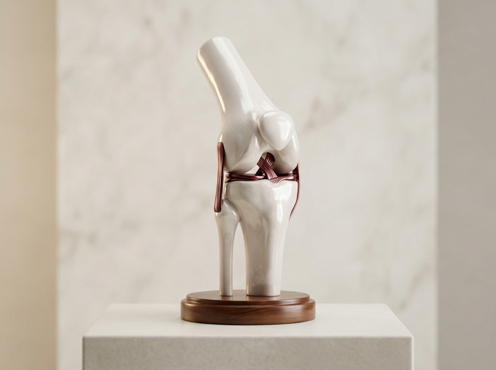
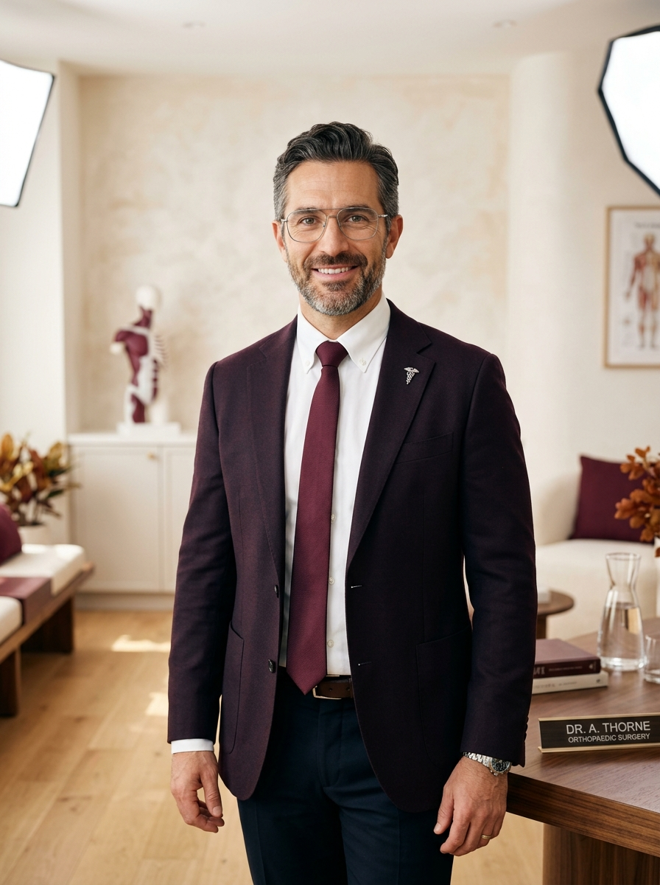
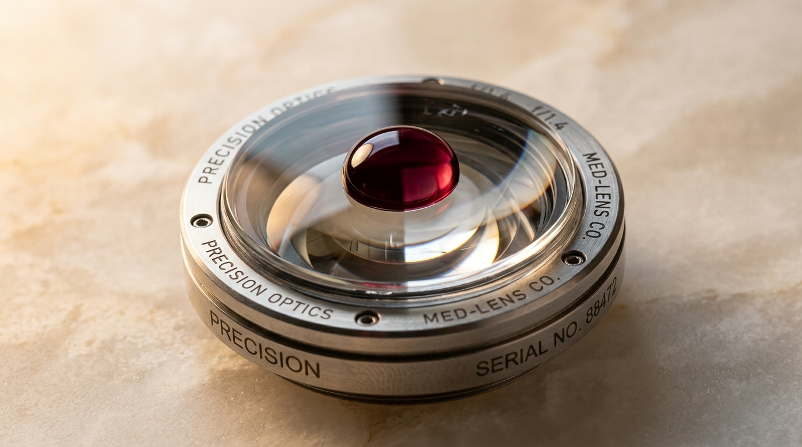

Biomecânica da mobilidade e precisão articular.
Preservação estrutural de joelho, ombro e quadril. Medicina regenerativa avançada e procedimentos minimamente invasivos para o restabelecimento do movimento natural.

Preservação Articular de Joelho
Combinação de infiltração ultraguiada de ácido hialurônico com reabilitação biomecânica individualizada para alívio do atrito cartilaginoso.

Dr. Fernando Galha
Médico Ortopedista & Traumatologista · CRM-SP 154.892 | RQE 48.921Dedicação à medicina articular preservadora, combinando rigor técnico, avaliação biomecânica de precisão e escuta humana acolhedora.
Formação em centros de referência com foco em artroscopia de joelho e ombro.
Manutenção da anatomia natural através de viscossuplementação e reabilitação guiada.
"O objetivo da consulta é ouvir o paciente, compreender sua rotina e desenhar a estratégia mais segura para o seu bem-estar."
Abordagens Terapêuticas & Tecnologia
Protocolos individualizados desenhados conforme o grau de acometimento e o perfil de mobilidade de cada paciente.
Infiltração Ultraguiada com Ácido Hialurônico
Procedimento ambulatorial rápido que repõe a viscosidade do líquido sinovial. Reduz o atrito na cartilagem desgastada pela artrose, proporcionando alívio prolongado e melhora na mobilidade sem necessidade de internação.

Reparo Artroscópico por Vídeo
Técnica com incisões milimétricas para o tratamento de lesões de menisco, reconstrução do ligamento cruzado anterior (LCA) no joelho e reparo de manguito rotador no ombro. Menor trauma tecidual e pós-operatório acelerado.
Reabilitação do Atleta
Tratamento especializado para tendinopatias, entorses e lesões musculares. Foco na recuperação da força funcional e retorno seguro à prática esportiva de alto impacto.
Artroplastia Total e Parcial
Substituição articular com componentes de titânio e cerâmica de altíssima durabilidade. Indicada para quadros avançados de artrose, restaurando o alinhamento anatômico e eliminando a dor persistente.
Auto-Avaliação de Mobilidade Articular
Responda às 3 etapas abaixo para obter uma orientação prévia sobre a urgência do seu quadro.
Qual região apresenta maior desconforto?
Qual é o tempo de evolução dos sintomas?
De que forma a dor impacta suas atividades?
Relatório de Avaliação Concluído
Com base nas suas respostas, é altamente recomendada uma investigação detalhada com exame físico e exames de imagem para evitar o agravamento do desgaste articular.
ENVIAR RESULTADO AO DR. FERNANDOEsclarecimentos Frequentes
O atendimento é realizado em modalidade particular. Fornecemos nota fiscal médica detalhada e relatório técnico para que você possa solicitar o reembolso integral ou parcial junto ao seu plano de saúde conforme os limites do seu contrato.
Nos estágios iniciais e intermediários de artrose, a aplicação de ácido hialurônico restaura a lubrificação da articulação, reduz a dor e pode postergar por anos a necessidade de um procedimento cirúrgico.
Por tratar-se de uma técnica minimamente invasiva com incisões milimétricas, a alta hospitalar ocorre no mesmo dia e a reabilitação orientada inicia-se em poucas 48 horas.